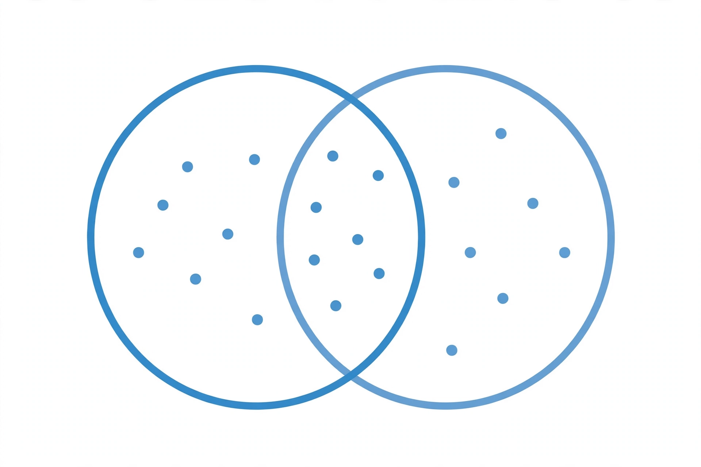

Set (mathematics)

[Image: Venn diagram of two overlapping sets with elements marked as dots]
In mathematics, a set is a collection of distinct objects, called its elements or members, considered as a single object. Sets are one of the most fundamental concepts in mathematics: numbers, functions and even other sets can all be built from them.
The modern theory was created by Georg Cantor in the 1870s; the notation of braces, such as {1, 2, 3}, and symbols for membership (∈) and inclusion (⊆) come from that tradition. Basic operations on sets include union, intersection and difference, pictured with Venn diagrams.
Naive and axiomatic set theory
Cantor's informal ('naive') set theory ran into paradoxes — most famously Russell's paradox of the set of all sets that do not contain themselves — which led to axiomatic systems such as Zermelo–Fraenkel set theory that restrict how sets may be formed.
Two sets are equal when they have the same elements; the empty set ∅ has none. The number of elements of a finite set is its cardinality, and Cantor showed infinite sets can have genuinely different cardinalities.